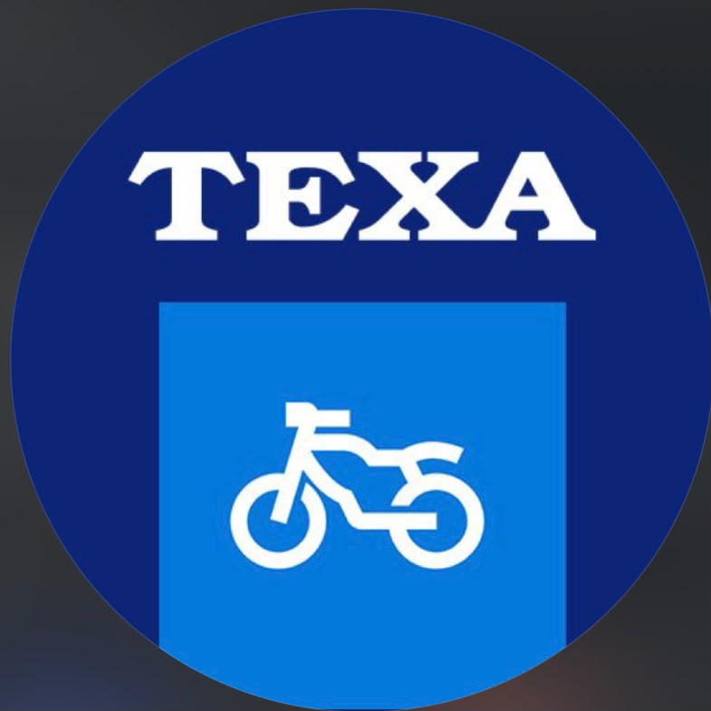
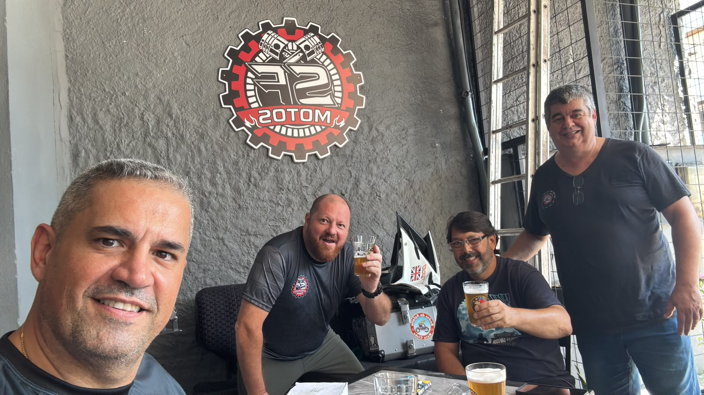
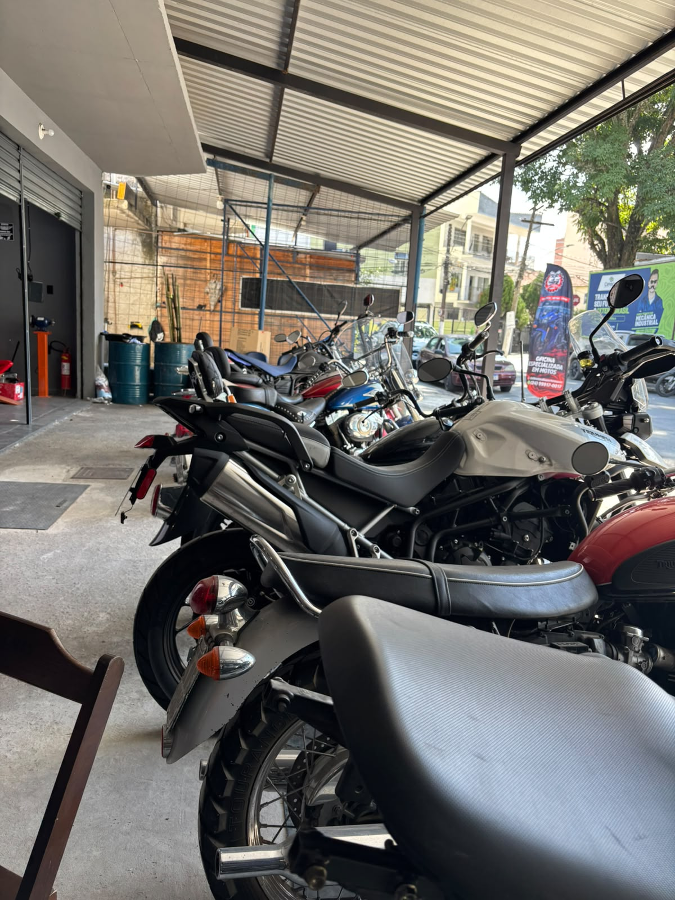
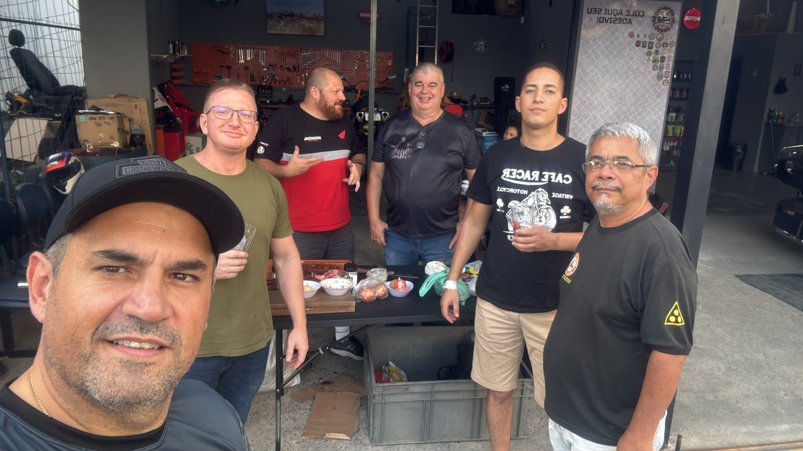
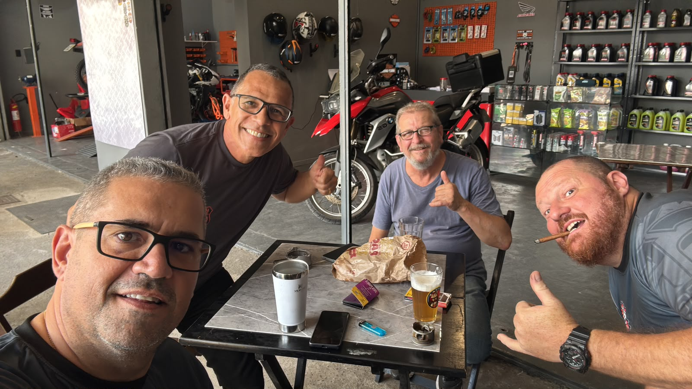
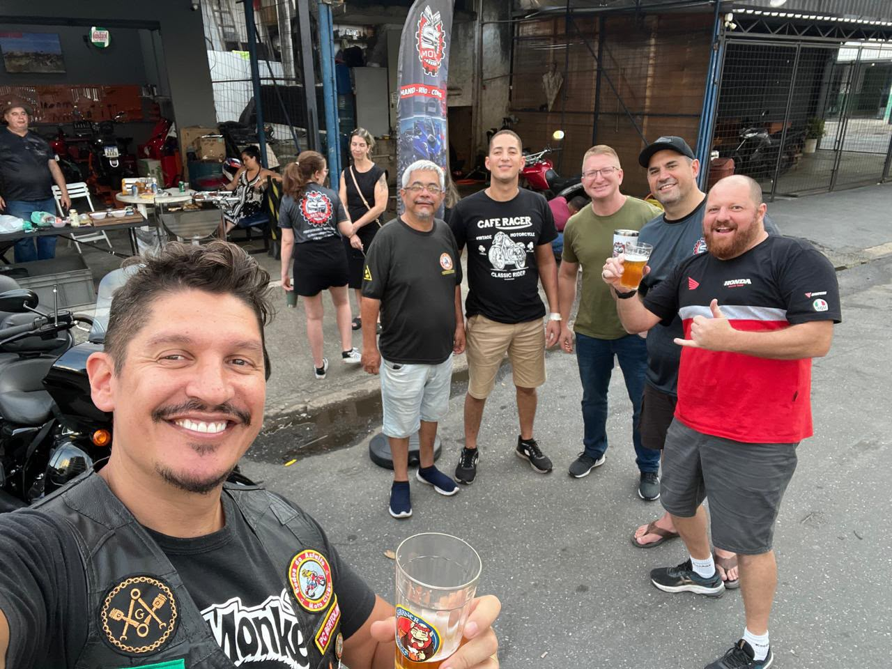

Antes
Depois
Antes
Depois
Placeholder 01
Categoria — a definir
Substituir por foto real do trabalho
Manutenção · Performance · Customização
Fundada em 2026, a SF Motos Alta Performance nasceu com um objetivo claro: atender motos de alta cilindrada e alto padrão em Resende com a tecnologia e o rigor técnico que esse tipo de máquina exige.
Trabalhamos com honestidade e transparência em cada orçamento, comprometidos com o cliente do início ao fim — é isso que nos coloca como referência em oficina de moto de alta performance na cidade.
Anotamos o histórico e o que você percebeu de diferente na moto.
Inspeção técnica completa antes de qualquer orçamento fechado.
Serviço feito com peças certas e prazo combinado.
Teste final e explicação do que foi feito, sem letra miúda.
Vamos a fundo em cada detalhe do motor pra encontrar a causa real e dar a tratativa certa. Nem sempre é preciso desmontar tudo — mas vamos até onde for necessário.
Retífica, upgrade de potência e tuning.

Check-up completo de motor, freios e suspensão.
Regulagem e setup para uso urbano ou pista.
Diagnóstico de injeção eletrônica e fiação.
Escapamento, visual e preparação sob medida.
Balanceamento, alinhamento e troca.
Preparação completa pra rodar longas distâncias.
Atendimento de emergência na região.
Motos, ferramentas e gente de verdade — o dia a dia da SF Motos, direto do chão de oficina.

01 / Evento
02 / Evento
03 / Evento
04 / Evento
05 / EventoSubstituir por foto real do trabalho
Substituir por foto real do trabalho
Substituir por foto real do trabalho
R. Dalva Menandro, 34
Comercial, Resende — RJ
Seg — Sáb
08h às 18h
(24) 99917-0017
Tudo o que você precisa para sua moto e para curtir o momento, em um só lugar.
Na SF Motos, você encontra muito mais do que uma oficina. Tenha por perto tudo o que faz parte da experiência de quem vive o mundo das duas rodas.
Serviço técnico e cuidado com sua moto.
Boa companhia enquanto sua moto é atendida.
Produtos e itens para sua moto.
Praticidade e estilo para sua moto.
Fale com a oficina agora pelo WhatsApp
Chamar no WhatsApp